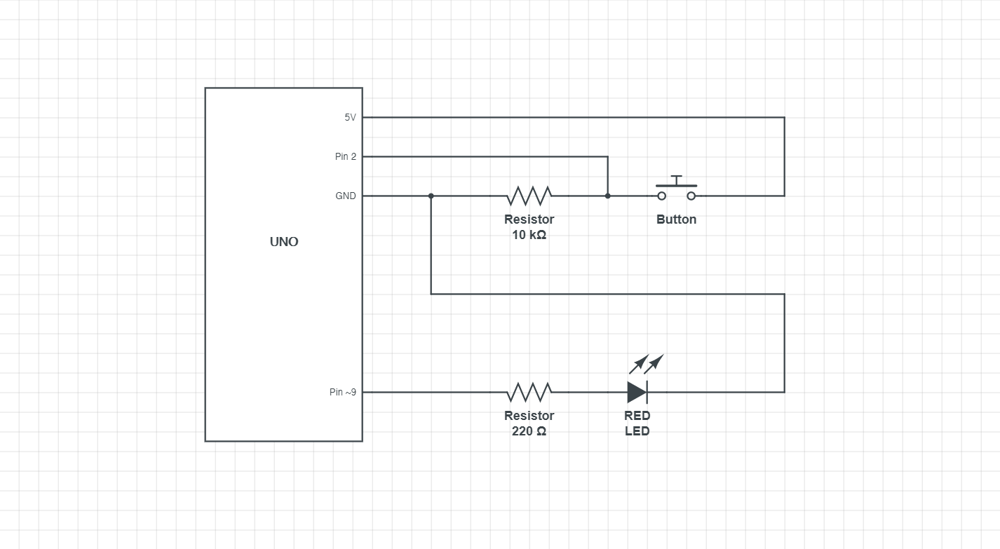
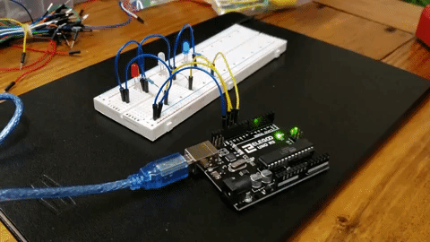

Assignment 1: Blink!
BACK
Assignment 2

This is the schematic for my circuit. I choose a 220 Ohm resistor to feed into the LED because a RED LED has a voltage drop of 1.8V and a desired amp of 0.02A. Given the equation, V=IR the optimal resistor is 160 Ohms. The closets resistor I have to that value is 220 Ohms.

This is my circuit. I choose a 10K Ohm resistor to connect the button and the UNO board because that was the resistor used in the Arduino Button example. Very little current is needed to allow the communication between the button and the board, therefore a 10K Ohm resistor was used.
//defining pin 2 as the button pin, does not change
const int buttonPin = 2;
//defining digital output pin 9 as the LED pin, does not change
const int ledPin = 9;
//defining a variable for brightness
int brightness = 0;
//defining a variable for button state
int buttonState = 0;
//setup function
void setup() {
//setting up output pin
pinMode(ledPin, OUTPUT);
//setting up input pin
pinMode(buttonPin, INPUT);
}
//loop function
void loop() {
//buttonState will read whether the button in open (LOW) or closed (HIGH)
buttonState = digitalRead(buttonPin);
//if statement for whether or not the button state is HIGH or LOW
if(buttonState == HIGH) {
//for loop to fade LED to it's brightess state
for(brightness = 0; brightness <= 255; brightness++) {
//writes to LED pin the brightness level
analogWrite(ledPin, brightness);
//5ms delay
delay(5);
}
//got loop to fade LED back down to an off state
for(brightness = 255; brightness >= 0; brightness--) {
//writes to LED pin the brightness level
analogWrite(ledPin, brightness);
//5ms delay
delay(5);
}
}
//else statement for when the button state is LOW (default)
else {
//writes to LED pin being off
digitalWrite(ledPin, LOW);
}
}
This is the code I used in Arduino to create this circuit. I used digitalRead to log the state of the button, analogWrite to create the fading affect in the LED, and digitalWrite to put the LED in the LOW state when the button was open.

This is the gif of my circuit in operation. When you press the button the LED fades to max brightness, then fades back to its lowest brightness and turns off. You can press the button while the LED is fading and nothing will happen.